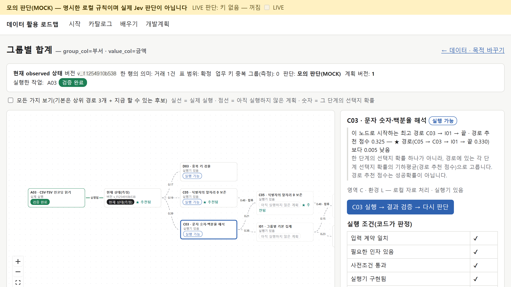
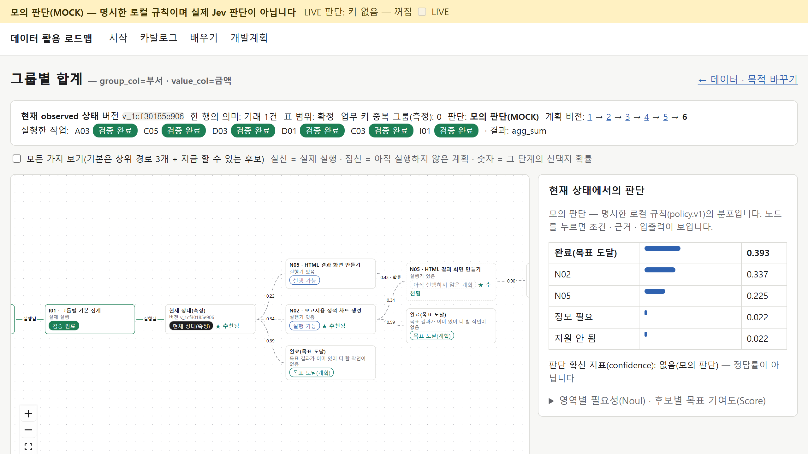
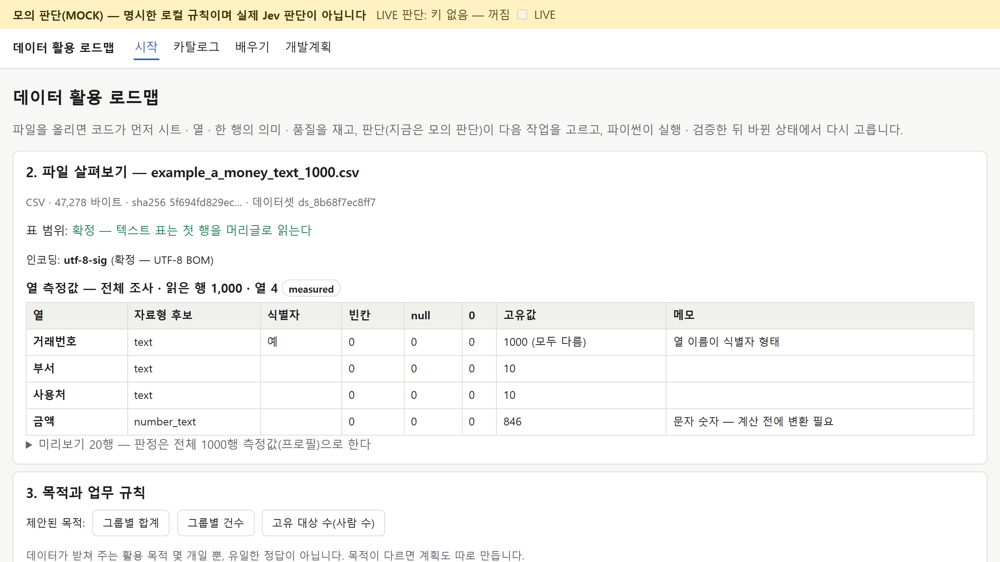

Jev: 확률로
다음 작업을 고르는 AI
엑셀 파일을 받았을 때 「무엇부터 할까」는 확률로 고르고, 계산과 확인은 코드가 맡는 구조를 예제 숫자로 따라갑니다.
60분을 여섯 구간으로 나눠 한 파일을 끝까지 따라간다
합계를 내 달라는 파일인데, 바로 더할 수가 없다
| 거래번호 | 부서 | 사용처 | 금액 |
|---|---|---|---|
| T0001 | 총무팀 | 행사 대관 | 98,300원 |
| T0002 | 인사팀 | 출장 교통비 | 128,700원 |
| T0003 | 재무팀 | 출장 교통비 | 29,700원 |
| … 1,000행 · 부서 10곳 (가상 자료 example_a_money_text_1000.csv) | |||
고르는 일은 Jev, 계산하는 일은 파이썬이 맡는다
Jev 는 현재 상황에 대해 미리 정한 질문에 답한다. 프로그램은 그 답으로 다음 작업을 고른다.
열 · 자료형 · 행 수 · 오류를 잰다
선택 · 수준 · 예/아니오 평가
허용 작업 · 중단 조건 검사
변환 · 집계 · 차트
평균−분산 수식은 Jev 의 출력이 아니라 우리 앱의 설계 자리에 놓는다
- 입력 = state(상황) + questions(질문)
- 출력 = Choice · Score · Noul 세 형식의 구조화된 답
- 행동 뒤 상태를 알려 주는 전이 모형을 자동으로 준다는 근거는 없다
- 상태 s · 행동 a · 전이 — 강화학습(MDP)의 개념을 빌려 쓴다
- E[R] − β·Var(R) — 보상과 확률을 따로 정의하면 정책 코드에서 계산할 수 있다
상태는 모델이 추측할 것을 줄여 주는 메모다
{
"goal": "부서별 금액 합계",
"grain": "거래 1건",
"key": "거래번호",
"rows": 1000,
"amount_unit": "KRW",
"amount_type": "통화 문자가 포함된 문자열",
"completed_steps": ["A03"],
"available_steps": ["C03", "C05", "D03", "D01"]
}
- 목표 — 돈의 합계인가, 참여자 수인가
- 한 행의 의미 — 학생 한 명인가, 신청 한 건인가
- 단위 · 자료형 — 원 단위 글자인지 숫자인지
- 한 일과 할 수 있는 일 — 지금 후보 작업
역할 나누기 확인
확률분포는 다음 작업 후보들에게 1을 나눠 준 것이다
| 다음 작업 Y | 확률 |
|---|---|
| C03 문자 숫자 정리 | 0.70 |
| D03 중복 검출 | 0.20 |
| I01 그룹 집계 | 0.10 |
| 합계 | 1.00 |
확률변수 Y = 아직 확정되지 않은 결과. 각 확률은 0~1, 서로 겹치지 않는 선택지를 모두 더하면 1.
실제 Jev 응답이 아닌 교육용 예시다.
같은 질문이라도 조건(상태)이 바뀌면 답이 바뀐다
- 정리(C03)가 먼저일 가능성이 크다
- 집계(I01)가 먼저일 가능성이 크다
평균이 높아도 흔들림(분산)까지 보면 선택이 달라질 수 있다
평균 E[X] = Σ p·x → 0×0.5 + 14×0.5 = 7 분산 Var(X) = Σ p·(x−μ)² → 0.5×(0−7)² + 0.5×(14−7)² = 49 (표준편차 = √49 = 7점)
확률분포 읽기 확인
Jev 에게는 세 가지 모양의 질문만 한다
미리 정한 선택지 중 하나. 응답 = 최대 확률의 choice · 전체 probabilities · 분포를 요약한 confidence.
예) 먼저 다룰 영역은 구조 해석 · 표준화 · 집계 중 무엇?
순서가 있는 수준(2~10개) 중 어디쯤인가. 응답 = 수준 번호의 확률 가중평균 score · 분포 · confidence.
예) 집계 준비도는 0 · 1 · 2 중 어디?
「예」일 확률 하나. 별도 confidence 는 없다.
예) 사용자가 집계 기준을 밝혔는가? → noul = 0.8
Score 1.10 은 정답률이 아니라 정해 둔 수준 사이의 위치다
| 수준 | 집계 준비도 | 교육용 확률 |
|---|---|---|
| 0 | 필수 열이 없음 | 0.10 |
| 1 | 열은 있으나 문자 숫자를 정리해야 함 | 0.70 |
| 2 | 숫자형 열이 준비돼 집계 가능 | 0.20 |
Score = 0×0.10 + 1×0.70 + 2×0.20
= 1.10
Score 읽기 확인
정답률이 같아도 확신의 크기가 맞는지는 따로 잰다
「예」라고 예측한 10건 중 실제로 8건이 예였다. 두 모델 모두 0.5 기준으로는 80% 정확하다.
이진 Brier = (1/N) Σ (p − y)², y 는 0 또는 1. 작을수록 좋다. 이 집합에서 0.99 는 과한 확신이다.
「잘 고르고, 확신도 정직하게」 — 공개된 것과 확인 못 한 것을 나눠 말한다
| 구분 | 발표에서 말할 내용 |
|---|---|
| 확인한 제품 동작 | 세 가지 질문 형식 · 구조화된 응답 · 확률분포 |
| 공급자의 학습 설명 | RLCD(Reinforcement Learning for Calibrated Decisions) — 보정된 판단을 지향 |
| 교육용 통계 설명 | Brier · 기댓값 · 분산 · 엔트로피 |
| 확인하지 못한 것 | 정확한 전체 학습 손실 · 상세 구조 · 재현 가능한 학습 절차 |
보정과 confidence 확인
실행이 상태를 바꾸고, 바뀐 상태에서 다시 고른다
금액이 글자인 거래 표
금액이 숫자로 바뀐 표
부서별 집계표
핵심 두 단계만 그렸다. 1000행 파일에서 앱은 그 앞에 점검 단계(C05 · D03 · D01)를 먼저 거친다 — 뒤의 앱 캡처.
st+1 = T(st, at, 실행 결과) — 전이를 만드는 것은 실제 실행 코드와 그 검증이다. 정책 π = 상태와 판단을 보고 다음 허용 작업을 고르는 규칙.
β 를 키울수록 흔들리는 선택을 피한다
| β | A 효용 (6, 분산 0) | B 효용 (7, 분산 49) | 선택 |
|---|---|---|---|
| 0 | 6 | 7 | B |
| 0.01 | 6 | 6.51 | B |
| 0.05 | 6 | 4.55 | A |
β 와 단위 확인
값을 직접 바꿔 보면 프로그램은 확률을 배우지 않고 계산만 한다는 게 보인다
- B 평균 = 8, 분산 = 64
- β = 0.05 → U(B) = 8 − 0.05×64 = 4.8
- 여전히 U(A) = 6 이 커서 A 를 고른다
- 틀리면 손실 100 · 검토 비용 5 라고 가정
- p_correct 0.8 → 기대손실 (1−0.8)×100 = 20 → 검토
- p_correct 0.98 → 기대손실 2 → 자동처리 후보
py -3 jev_stats_demo.py. p_correct 는 그 업무에서 검증된 정답확률이라는 가정이다.1000행 파일을 올리면 C03(0.39)이 1순위 후보 — 그런데 ★ 추천은 C05(0.19)

모의 판단(MOCK) 앱의 로컬 규칙(policy.v1)이 만든 분포다 — 실제 Jev 응답도, Jev 성능도 아니다. 그래프의 숫자 = 그 단계의 선택지 확률. ★ 가 왜 0.39 가 아닌 0.19 에 붙는지는 다음 장.
★ 추천은 한 단계 확률이 아니라 경로 추천 점수로 고른다
| 1000행 첫 판단의 경로 | 단계마다의 선택지 확률 (끝 = 목표 도달도 한 단계) | 경로 추천 점수 |
|---|---|---|
| ★ C05 → C03 → I01 → 끝 | 0.1897 · 0.4787 · 0.4762 · 0.2756 | 0.3304 |
| C03 → I01 → 끝 | 0.3879 · 0.3774 · 0.2349 | 0.3252 |
- C03 을 먼저 하면 다음 판단에 C05 · D03 · D01 이 남아 I01 이 0.377 로 나뉜다. C05 를 먼저 하면 C03 이 0.479 로 뚜렷해진다
- 곱을 그대로 쓰면 단계가 많은 경로일수록 작아진다 → n제곱근으로 단계 수를 맞춘다
- 차이 0.005 는 사실상 동률이다 — 「C05 가 확실히 낫다」가 아니다
실행 버튼은 코드가 판정한 조건 6가지를 모두 통과해야 켜진다

모의 판단(MOCK) 입력 계약 · 필요한 인자 · 사전조건 · 실행기 구현 · 실행 환경 · 허용된 작업 — 확률과 관계없이 하나라도 안 되면 실행하지 않는다.
★ 를 따라 한 단계씩 실행하면 새 상태에서 계획이 다시 만들어진다

모의 판단(MOCK) 실선 = 실제 실행 · 점선 = 아직 실행하지 않은 계획. C05 → D03 → D01 → C03 → I01 마다 계획 버전이 1 → … → 6 으로 쌓인다(옛 버전은 안 지움).
합계는 파이썬이 내고, 검증(check)이 따로 확인한다

모의 판단(MOCK) 실행 · 검증은 실제 파이썬 — 부서 10곳 · 합계 148,982,900원(CSV 를 따로 더한 값과 같음). 해 보기: 파일 올리기 → example_a_money_text_1000.csv · 키 = 거래번호
다시 판단하는 과정 확인
파일이 오면 코드가 먼저 잰다 — 행 수와 합계를 모델에게 세게 하지 않는다
| 판단 상태에 넣을 것 | 왜 |
|---|---|
| 목적(또는 후보 목적) | 돈 합계 · 사람 수 · 변화 비교는 필요한 경로가 다르다 |
| 한 행의 의미 | 학생 중복과 신청 중복을 구별한다 |
| 실제로 잰 값(프로파일링) | 모델 추정치와 측정값을 구별한다 |
| 업무 규칙 | 분모 · 기간 · 단위 · 중복 정책을 임의로 만들지 않는다 |
| 후보 작업 카드 · 실행 환경 | 정해진 작업 범위 안에서, 실행할 수 있는 것만 |
앱은 올린 파일의 열을 측정값(measured)으로 먼저 보여 준다

모의 판단(MOCK) 시트 · 표 범위 · 인코딩 · 자료형 후보는 코드가 잰 값이다. 사람은 목적과 업무 규칙(한 행의 의미 · 업무 키 · 단위)을 정한다.
153개 카드는 순서표가 아니라 작업 메뉴판이다
- 카드는 레시피의 명세다. 입력 · 출력 · 성공 기준을 읽고 함수를 구현해야 실행할 수 있다
- A~Q 는 순서가 아니다. 이미 자료를 받았다면 A(수집)를 다시 고를 필요가 없다
- D03 = 중복 검출, E04 = 정책에 따른 중복 해소. 검출했다고 자동으로 지우지 않는다
같은 신청 자료도 목적에 따라 길이 갈라진다
가상 자료: 신청번호 · 학번 · 부서 · 상태 · 신청일
| 목적 | 주요 경로 | 먼저 정할 규칙 |
|---|---|---|
| 부서별 신청 건수 | 키 점검 → I01 집계 → N02 차트 | 한 행 = 신청 1건 |
| 실제 참여자 수 | 식별자 보존 → I02 중복 제외 개수 → N02 | 여러 신청을 한 사람으로 셀지 |
| 인증률 | 검증 → 건수 집계 → H01 비율 → N02 | 분자 · 분모와 기간 |
| 월별 변화 | 날짜 정리 → J01 → J03 → N02 | 기준 기간 · 미수집과 0 구별 |
비율 계산 확인 (가이드 W02)
하나만 고르지 않고 후보 경로 몇 개를 유지하며 비교한다
- 빔 탐색(beam search) — 상위 몇 개 경로만 남기고 넓힌다(공식 Jev 예제에도 있다)
- 선행조건과 종료 상태가 가지를 줄인다
- 화면엔 상위 3개를 펼치고, 「후보 더 보기」로 넓힌다
- 보이는 경로 = 정한 탐색 범위 안의 후보일 뿐, 모든 가능성이 아니다
화면의 세 숫자는 서로 다른 것이다
지금 질문의 선택지에 대한 모델(또는 모의 규칙)의 평가
여러 단계를 비교하려고 앱이 정한 점수(이 앱은 각 단계 선택지 확률의 기하평균 — 14 ①-2). 성공확률이 아니다
정해진 업무를 반복 실행해서 관측한 비율 — 실행 기록이 있어야 안다
결과를 믿으려면 다섯 가지를 따로 잰다
- 후보 안에 맞는 작업이 있나 — 후보 재현율 · 단계별 정확도
- 확률이 실제와 맞나 — 정답 라벨 · 보정 도표 · Brier
- 자동으로 처리한 것 중 틀린 건 얼마나 — 자동처리율과 그 집합의 오류율
- 결과 자체가 맞나 — 행 수 · 합계 · 중복 · 키 · 단위 · 정답 파일 대조
- 얼마나 드나 — 호출 수 · 토큰 · 응답 시간 · 실제 모델 버전
코드 검사와 모델 판단이 부딪힐 때
다섯 질문으로 오늘을 정리한다
| 질문 | 답 |
|---|---|
| Jev 에게 엑셀 합계를 직접 맡길까? | 합계는 코드가, Jev 는 해석 · 선택에 |
| Score 1.5 가 정확도 75% 인가? | 정해 둔 수준 번호의 가중평균이다 |
| confidence 0.9 면 90% 맞는가? | 실제 라벨로 확인해야 한다 |
| 반복 호출하면 모델이 학습되는가? | 상태를 갱신할 뿐, 재학습과 별개다 |
| 파일만 있으면 최적 활용이 하나로 정해지나? | 목표와 업무 규칙에 따라 여러 길이 있다 |
내 업무에서 조건과 후보가 분명한 판단 하나를 적어 보자
- 판단 하나 — 무엇을 고르게 할까
- state — 그 판단에 필요한 정보(목적 · 한 행의 의미 · 잰 값 · 규칙)
- 가능한 답 — Choice 선택지 · Score 수준 · 예/아니오 중 어떤 모양인가
- 주관식 의견을 미리 정한 범주 중 하나로 고르기
- 보고서에서 오류 검토 대상 고르기
- 이번 파일에 쓸 자동화 카드 추천받기
공식 문서로 확인한 것과 교육용 예시를 구분했다
- TypeSafe 공식 문서: 소개 · Choice · Score · Noul · Confidence · State · HTTP API · RLCD 설명 · 계층 분류 · beam search
- 보정 연구: Guo 외, ICML 2017 · 평균−분산 정책: Tamar 외, ICML 2012 (Jev 논문이 아님)
- 표의 가상 자료 · 설명용 확률 · 임계값은 교육용 예시다. 153개 카드는 첨부 엑셀 자동화 가이드의 설계 개수다
- 앱 캡처는 모두 모의 판단(MOCK) — 실제 Jev 호출은 이 자료에서 검증하지 않았다